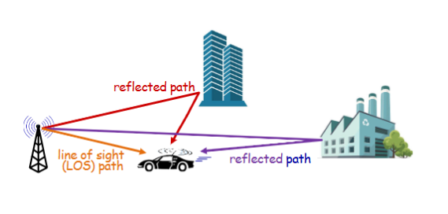
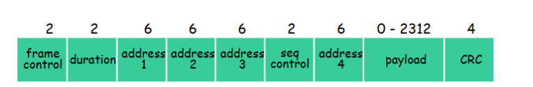

互联网计算-07无线网络和移动网络
引入
无线网络的组成元素
无线主机：
- 笔记本电脑、智能手机、物联网
- 运行应用程序
- 可能是固定的或移动的
- 无线并不总意味着移动
基站：
- 通常连接到有线网络
- 中继器：复杂在有线的网络和其“区域”内的无线主机之间发送数据报
- 例：蜂窝塔、802.11 接入点
无线链路：
- 通常用于连接移动设备到基站，也用作骨干链路
- 多址协议协调链路访问
- 各种传输速率和距离，频率带
基础设施模式：
- 基站将移动设备连接到有线网络
- 切换：移动设备更换提供连接到有线网络的基站
ad hoc 模式：
- 没有基站
- 节点只能向链接覆盖范围内的其它节点传输
- 节点自行组织成网络：彼此之间进行路由
无线
无线链路和网络特性
fading 衰减
无线电信号在传播过程中会衰减（失去能量）（自由空间“路径损耗”）
mutipath 多径
多径传播：无线电信号从地面、建筑物等物体反射，到达目的地的时间略有不同

noise 噪声
信噪比 SNR signal-to-noise ratio
- 较大的信噪比——更容易从噪声中提取信号（一件“好事”）
信噪比 SNR 与误码率 BER 之间的权衡
- 给定物理层：增加功率 > 增加信噪比 -> 降低误码率
- 信噪比可能随移动性变化：动态调整物理层（调制技术、速率）
hidden terminals 隐藏终端
CDMA：码分多址
Code Division Multiple Access
- 为每个用户分配唯一的“码”，即码集划分
- 所有用户共享相同频率，但每个用户有自己的“码片”
- 允许多个用户“共存”，并以最小干扰同时传播（如果码是“正交”）
- 编码：内积：原始数据 x 扩频序列
- 解码：累加内积：编码数据 x 扩频序列
双发干扰：
WiFi：802.11 wireless LANs
- 无线主机与基站通信
- base station = access point AP 基站=接入点
- 在基础设施模式下，基本服务集 BSS（又名蜂窝）包含：
- 无线主机
- 接入点 AP
- ac hoc 模型：仅主机
Channels 信道
频谱在不同频率上划分为信道
- AP 管理员选择 AP 的频率
- 可能存在干扰，信道可能与邻近 AP 选择的相同
Association 关联
到达主机：必须与主机关联
- 扫描信道，监听包含 AP 名称 SSID 和 MAC 地址的信标帧
- 选择要关联的 AP
- 然后可能执行认证
- 然后通常运行 DHCP 以获取 AP 子网中的 IP 地址
passive/active scanning 被动/主动扫描
被动扫描：
- 来自 APs 的 beacon 帧
- 发送关联请求帧：H1 到选定的 AP
- 选定 AP 发送给 H1 的关联响应帧
主动扫描
- H1 广播探测请求帧
- 来自 APs 的探测响应帧
- 发送给选定 AP 的关联请求帧：H1 到选定 AP
- 从选定 AP 发送给 H1 的关联响应帧
IEEE 802.11: 多路访问
避免冲突：两个节点同时传输
802.11：CSMA - 传输前先感知
-
不要与另一个正在进行的传输发生冲突
802.11：没有冲突检测
-
难以感知碰撞：高发射信号，由于衰落接收信号弱
-
无法在任何情况下检测到所有碰撞：隐藏终端，衰落
-
目标：避免碰撞：CSMA/Collision Avoidance
IEEE 802.11 MAC Protocol: CSMA/CA
802.11 发送者：
-
如果信道空闲超过 DIFS 时间，则发送整个帧（不进行载波监测）
-
如果感知到信道繁忙，启动随机退避计时器，信道空闲时计时器递减，计时器归零时立即传输，若未收到 ACK，则增大随机退避间隔；重复步骤 2
802.11 接收方：
- 若正确接收帧，在 SIFS 时长后返回 ACK（由于隐藏终端问题，必须发送 ACK）
避免冲突：
想法：发送者使用小的预留数据包“预留”信道用于数据帧
- 发送方首先使用 CSMA 向基站发送小的 request-to-send（RTS）数据包
- RTSs 可能仍相互碰撞
- 基站响应 RTS 数据包广播 clear-to-send CTS
- CTS 被所有节点接收
- 发送方传输数据帧
- 其它站点延迟传输
802.11 frame: 寻址

Address1: 接收此帧的无线主机或 AP 的 MAC 地址
Address2: 发送此帧的无线主机或 AP 的 MAC 地址
Address3: AP 连接的路由器接口的 MAC 地址
Address4: 仅在 ad hoc 模式下使用
duration: 保留传输时间（RTS/CTS）的持续时间
seq control: 帧序列号（用于可靠数据传输）
type：帧类型（RTS, CTS, ACK, 数据）
802.11：同一子网内的移动性
802.11：高级功能
速率自适应：
- 基站和移动设备根据移动情况动态改变传输速率（物理层调制技术），随着移动变化，信噪比变化
- 当节点远离基站时，信噪比下降，误码率上升
- 当误码率过高时，切换到较低传输速率但误码率较低的模式
电源管理：
- node-to-AP：“我将休眠，直到下一个信标帧”
- 接入点知道不要向该节点发送帧
- 节点在下一个信标帧之前醒来
- beacon frame 信标帧：包含等待发送的 AP 到移动设备的帧的移动设备列表
- 如果有待发送的 AP 到移动设备的帧，节点将保持唤醒状态；否则再次进入睡眠状态，直到下一个信标帧
个人区域网络：蓝牙
移动网络：4G 和 5G
与有线互联网的相似性：
- 边缘/核心的区分，但两者都属于同一运营商
- 全球蜂窝网络：一个由网络组成的网络
- 广泛使用我们已研究的协议：HTTP、DNS、TCP、UDP、IP、NAT、数据/控制平面分离、SDN、以太网、隧道
- 与有线互联网互联
与有线互联网的不同之处
- 不同的无线链路层
- 移动性作为一类服务
- 用户“身份”（通过 SIM 卡）
- 商业模式：用户订阅蜂窝运营商
- 强烈的“家庭网络”概念与在访问网络上的漫游
- 全球接入，具有认证基础设施，以及运营商间结算
4G LTE 架构的要素
Mobile device
- 智能手机、平板电脑、笔记本电脑、物联网、… 配备 4G LTE ratio
- 64 位国际移动用户身份识别码（IMSI），存储在 SIM（用户身份模块）卡上
- LTE 术语：用户设备（UE）
Base station
- 在运营商网络的边缘
- 管理无线无线电资源，其覆盖区域内的移动设备（蜂窝）
- 与其他元素协调设备认证
- 类似于 WiFi 接入点，但
- 在用户移动中发挥积极作用
- 与近基站协调以优化无线电使用
- LTE 术语：eNode-B
Home Subscriber Service (HSS)
- 存储 HSS 的网络是其归属网络的移动设备的信息
- 与 MME 在设备认证中协同工作
Service Gateway S-GW PDN Gateway P-GW
- 位于从移动设备到/从互联网的数据路径上
- P-GW
- 移动蜂窝网络的网关
- 看起来像其他互联网网关路由器
- 提供 NAT 服务
- 其它路由器
- 广泛使用隧道技术
Mobility Management Entity (MME)
- 设备认证 (device-to-device, network-to-device) 与 移动归属网络 HSS 协调
- 移动设备管理
- 单元间设备切换
- 跟踪/寻呼设备位置
- 从移动设备到 P-GW 的路径（隧道）设置
LTE
数据平面与控制平面分离
数据平面协议栈：第一跳
LTE 链路层协议：
- 分组数据汇聚：头部压缩、加密
- 无线链路控制 RLC 协议：分片/重组、可靠数据传输
- 媒体访问：请求、使用射频传输时隙 OFDM
数据平面协议栈：数据包核心
隧道：
- 移动数据报使用 GPRS 隧道协议封装，通过 UDP 数据报发送到 S-GW
- S-GW re-tunnels 数据报到 P-GW
- 支持移动性：当移动用户移动时，只有隧道端点会改变
LTE 数据平面：与基站关联
LTE 移动设备：休眠模式
就像 WiFi、蓝牙一样：LTE 移动网络可能会将无线电置于“睡眠”状态以节省电池：
- 浅睡眠：在 100 毫秒的无活动后
- 定期唤醒（100 毫秒）以检查下行传输
- 深度睡眠：在 5-10 秒的无活动后
- 机在深度睡眠时可能会更换基站——需要重新建立关联
全球蜂窝网络：一个由 IP 网络组成的网络
所有 IP：
- 运营商相互连接，并在交换点连接公共互联网
- 传统 2G、3G：并非所有 IP，其他方式处理
迈向 5G
移动性
移动管理：原理
挑战：
如果一个设备从一个网络移动到另一个网络
- “网络”将如何知道将数据包转发到新的网络
方法：
让终端来处理：
- 间接路由：通信从对应节点到移动节点通过家庭网络，然后转发到远程移动节点
- 直接路由：对应节点获取移动节点的国外地址，直接发送到移动节点
拥有“home”的重要性：
- 你信息的明确来源
- 人们可以知道你所在的地方
家庭网络，访问网络：4G/5G
家庭网络：
- 向蜂窝运营商（如 Verizon、Orange）购买的服务计划
- 家庭网络 HSS 存储身份和服务信息
访问网络：
- 除了你的家庭网络之外的任何网络
- 与其他网络的服务协议：提供对访客移动的访问
家庭网络，访问网络：ISP/WiFi
没有全球“家”的概念
- 来自 ISP 的凭证（用户名、密码）存储在设备上或与用户一起
- 互联网服务提供商可能由全国性、国际性的业务范围
- 不同的网络：不同的认证凭证
注册：家需要知道你在哪里
移动性——间接路由
评价：
三角形路由：当通信方和移动终端在同一网络时效率低下
移动终端在访问网络间移动：对通信方完全透明
- 在新访问网络中注册
- 新访问网络向归属 HSS 注册
- 数据报继续从归属网络转发到在新网络中的移动终端
- 通信方和移动终端之间的进行中的连接（如 TCP）可以保持
移动性——直接路由
评价：
- 克服三角形路由低效问题
- 对通信方不透明：通信方必须从归属代理获取转交地址
- 如果移动设备更换访问网络
- 可以处理，但会增加额外复杂性
移动管理：实践
4G 网络中的移动性：主要移动任务
配置 LTE 控制平面元素 （上图 2）
- 移动设备通过基站控制平面信道与本地 MME 通信
- MME 使用移动的 IMSI 信息联系移动设备的归属 HSS
- 获取认证、加密、网络服务信息
- 归属 HSS 知道移动设备现在驻留在访问网络
- 基站、移动设备选择 BS-mobile 数据平面无线信道参数
给移动设备配置数据平面隧道
- S-GW to BS tunnel：当移动设备切换基站时，只需更改隧道端点的 IP 地址
- S-GW to home P-GW tunnel：间接路由的实现
- tunneling via GTP (GPRS tunneling protocal)：移动设备的数据报文使用 GTP 封装在 UDP 内，再封装到数据报中
同一蜂窝网络中基站之间的切换
Mobile IP
移动 IP 架构
- 使用隧道间接路由到节点（通过家庭网络）
- 移动 IP 家庭代理：结合 4G HSS 和家庭 P-GW 的角色
- 移动 IP 外国代理：结合 4G MME 和 S-GW 的角色
- 在访问网络中代理发现的协议，通过 ICMP 扩展在家庭网络中注册访问位置
无线、移动性对高层协议的影响：